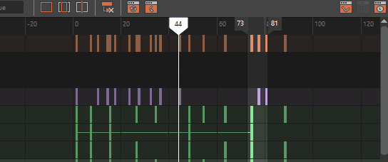
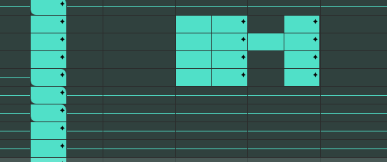

本主题介绍了“摄影表”(Dope Sheet)的“视图”(View)菜单中的选项。有关使用摄影表编辑器(Dope Sheet Editor)的信息，请参见使用“摄影表”(Dope Sheet)编辑关键帧。
“摄影表”(Dope Sheet)的“视图”(View)菜单控制“摄影表编辑器”(Dope Sheet Editor)中显示的内容。

显示“框显全部”(Frame All)、“框显播放范围”(Frame Playback Range)和“居中当前时间”(Center Current Time)
注：
框显播放范围时，“摄影表”(Dope Sheet)将水平缩放视图区域。
- 框显全部(Frame All)
- 热键：A
-
调整视图区域以显示所有动画。也可以单击“摄影表”(Dope Sheet)工具栏上的
 “框显所有显示的关键帧”(Frame all displayed keys)。
“框显所有显示的关键帧”(Frame all displayed keys)。
- 框显当前选择(Frame Selection)
- 热键：F
-
调整视图区域以显示选定动画。
- 框显播放范围(Frame Playback Range)
- 热键：G
-
调整视图区域以在窗口中显示播放范围。也可以单击“摄影表”(Dope Sheet)工具栏上的
 “框显播放范围”(Frame playback range)。
“框显播放范围”(Frame playback range)。
- 居中当前时间(Center Current Time)
- 热键：T
-
调整视图区域，使当前时间在编辑器内居中。也可以单击“摄影表”(Dope Sheet)工具栏上的
 “在当前时间居中”(Center at current time)。
“在当前时间居中”(Center at current time)。
- 显示关键帧值(Show Key Values)
- 进入“摄影表”(Dope Sheet)的“精度模式”(Precision Mode)，在该模式下您可以看到关键帧矩形内的关键帧值。禁用此选项可以隐藏这些值。
- 双击关键帧以输入精度值。

显示和编辑关键帧值
- 若要查看每种不同类型关键帧的列表，请参见摄影表视图区域主题中的摄影表关键帧类型。
- 自动框显(Auto Frame)
-
调整视图区域，使其在 X（或时间）轴上自动适配显示。默认情况下，“自动框显”(Auto Frame)处于禁用状态。
- 摄影表摘要(Dope Sheet Summary)
-
该选项将“摄影表摘要”(Dope Sheet Summary)加载到“摄影表”(Dope Sheet)大纲视图。有关摘要对象的详细信息，请参见“摄影表”(Dope Sheet)大纲视图。
- 场景摘要(Scene Summary)
-
此选项可显示场景中的所有动画关键帧，而无需事先选择项目。
- 通道集(Channel Sets)
- 在“摄影表”(Dope Sheet)中显示或隐藏任何“通道集”(Channel Sets)。有关通道集的详细信息，请参见在摄影表中创建通道集。